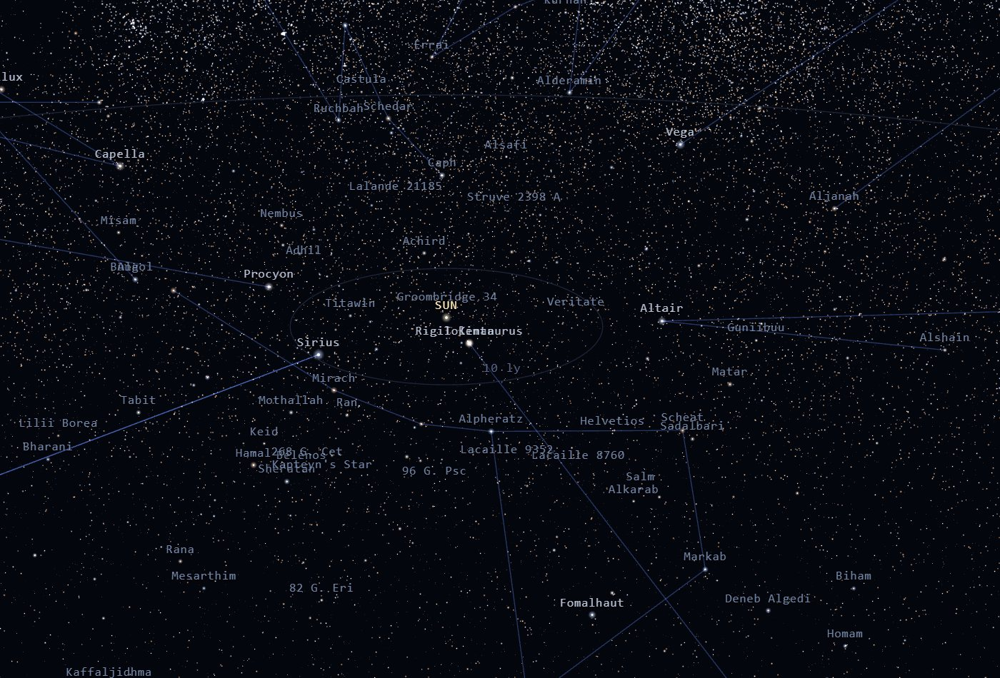

Live capture · stars.xaminisalamini.comFeatured
STARS
Fly through the real galaxy — 123,000 stars at their true 3D positions, with instruments no planetarium ships.
01 03
Explore Projects by Type
View all projectsSelected Work
Working instruments and game arenas — open them and try them.
About
Systems architect, builder and explorer — software, instruments and things made in the shop, each one built to be used.
Owner content input: biography and contact address to be supplied by Michael (FR9.4)